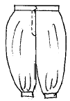
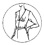
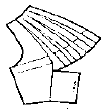
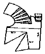
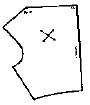
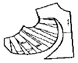
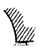
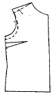
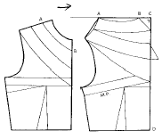
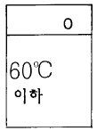

양장기능사 (2004-04-04 기출문제)
1과목: 임의 구분
1. 피계측자가 의자에 앉았을 때 우측 옆의 허리선에서부터 실루엣대로 의자 바닥까지(座面)의 수직 길이는?
- 바지 길이
- 밑위 길이
- 엉덩이 길이
- 치마 길이
(정답률: 80%)

2. 원형을 보정할 때 뒤에서 당기고 주름이 생기는 경우는 어떤 체형에서 나타나는가?
- 복부 반신체형
- 엉덩이가 들어가고 복부가 나온 체형
- 엉덩이가 나오고 복부가 들어간 체형
- 몸에 살이 적은 체형
(정답률: 74%)
3. 다음 중 가봉할 때 가장 필요한 것은?
- 핑킹 가위
- 핀
- 재단 가위
- 축도자
(정답률: 77%)
4. 다음 중 재봉 바늘의 호수는?
- 바늘의 강도 표시
- 바늘의 길이 표시
- 바늘의 굵기 표시
- 바늘의 종류 표시
(정답률: 85%)
5. 총원가에 속하지 않는 것은?
- 적정 이윤
- 제조 원가
- 일반 관리비
- 판매 간접비
(정답률: 67%)
6. 목이 짧은 체형에 가장 잘 어울리는 칼라는?
- 롤 칼라(Roll collar)
- 플랫 칼라(Flat collar)
- 차이나 칼라(china collar)
- 스카프 칼라(scarf collar)
(정답률: 59%)
7. 재봉틀 바늘 부호 중 DC의 기호는?
- 가정용 재봉틀에 사용
- 공업용 재봉틀에 사용
- 오버록 재봉틀에 사용
- 단추구멍 재봉틀에 사용
(정답률: 58%)
8. 재봉된 천에 실이 끊기거나 밑실이 올라오게 되어 박음질이 불량하게 되고 봉축 심 퍼커링 현상이 일어났다. 무엇으로 조절하는가?
- 윗실조절 장치
- 실채기
- 노루발의 압력
- 몸체 실걸이
(정답률: 69%)
9. 본봉재봉기에서 주어진 땀길이에 맞게 천을 앞으로 밀어주는 역할을 하는 것은?
- 노루발(presser foot)
- 침판(slide plate)
- 송치기구 (feed dog)
- 실채기(take up lever)
(정답률: 70%)
10. 솔기의 퍼커링 현상이 일어나는 요소가 아닌 것은?
- 윗실과 밑실의 장력에 의한 현상
- 바늘에 의해 올이 밀려 나가서 생기는 현상
- 바늘의 길이에 의한 현상
- 톱니와 노루발의 압력에 의한 현상
(정답률: 71%)
11. 채촌시 가슴둘레를 잴 때 정확한 방법은?
- 유두점을 지나 수평으로 줄자를 당겨 잰다.
- 유두 아랫부분을 수평으로 잰다.
- 계측용 벨트로 유두 윗 부분을 잰다.
- 유두점을 지나 수평으로 줄자를 자연스럽게 잰다.
(정답률: 87%)
12. 다음중에서 바늘꽂이 속에 넣어두어야 할 재료로 가장 거리가 먼 것은?
- 수수
- 머리카락
- 쌀겨
- 양초가루
(정답률: 50%)
13. 다음 그림에 나와 있는 팬츠의 이름은?

- 하렘 팬츠(harem pants)
- 힙행거 팬츠(hip hanger)
- 카고 팬츠(cargo pants)
- 테이퍼드 팬츠(tapered pants)
(정답률: 73%)
14. 밑실이나 윗실이 끊어질 때 처리법 중 가장 거리가 먼 것은?
- 밑실이나 윗실이 바르게 끼워졌는지 확인한다.
- 옷감에 맞는 바늘과 실을 사용하였는지 확인한다.
- 실 안내걸이 노루발, 바늘판, 북집, 바늘 끝에 흠이 있는지 점검한다.
- 노루발의 압력이 강한지 약한지를 점검하고 약하면 조여준다.
(정답률: 63%)
15. 90cm 폭의 옷감으로 긴소매 원피스를 재단할 경우 가장 적당한 옷감량의 계산법은?
- 원피스길이＋소매길이＋시접＋여유분
- (원피스길이× 2)＋소매길이＋시접＋여유분
- 원피스길이＋소매길이＋칼라너비＋시접＋여유분
- 원피스길이＋(소매길이× 1.5)＋시접＋여유분
(정답률: 62%)
16. 하반신 굴신체의 보정방법이 아닌 것은?
- 앞 중심을 파준다.
- 뒤 다트 분량을 늘려준다.
- 뒤 스커트의 다트 분량을 줄여준다.
- 뒤 스커트 허리에 보조 다트를 넣는다.
(정답률: 56%)
17. 아래 그림의 의복 패턴을 뜨려고 한다. 원형 활용이 바르게 된 것은?





(정답률: 85%)
18. 다음의 소매에 대한 설명 중 바르지 않은 것은?
- 플레어슬리브중에서 소매입구를 말아 올려입는 소매는 비숍슬리브라 한다.
- 소매산쪽은 주름을 넣어 부풀리고 소매부리로 갈수록 좁아지는 형태를 레그오브머튼슬리브라고 한다.
- 랜턴슬리브는 소매나 어깨를 강조할 때 이용된다.
- 소매부리에 개더를 잡아 부풀린 형태의 소매모양을 비숍슬리브라고 한다.
(정답률: 43%)
19. 기성복 제품의 원가 상승 혹은 하락 요인이 되는 설명 중 바르지 않은 것은?
- 복잡한 옷의 경우는 인건비가 많이 들므로 가격상승의 요인이 된다.
- 원단 값은 가격 결정에 중요한 역할을 하므로 기성복생산의 경우에는 값싼 원단을 사용하는 경우도 있다.
- 작업과정을 자동화하면 인건비를 줄일 수 있으므로 원가하락에 무조건 도움이 된다.
- 부속품비는 옷을 만드는데 드는 비용 중 비교적 큰 부분을 차지하므로 비용을 절감하기 위해서는 가격이 낮은 부속품을 사용한다.
(정답률: 92%)
20. 금속 또는 합성수지 등의 얇은 판을 여러모양으로 오려낸 것으로 옷의 색과 맞추어 붙이는 것은?
- 파이핑
- 퀼팅
- 애플리케
- 스팽글
(정답률: 62%)
2과목: 임의 구분
21. 다음 중 인사이드 포켓에 해당되지 않는 것은?
- flap pocket
- in-seam pocket
- patch pocket
- welt pocket
(정답률: 69%)
22. 재봉기 기구 중 윗실을 바늘로 유도하며 윗실의 장력을 조절하는 기구는?
- 북 기구
- 실채기 기구
- 바늘대 기구
- 노루발 기구
(정답률: 73%)
23. 가봉 시착을 위한 손바느질 방법으로 적당한 것은?
- 실은 반드시 강도가 강한 합성섬유로 한다.
- 바느질 방법은 박음질로 한다.
- 반드시 실은 두올로 한다.
- 바늘은 옷감에 직각으로 내려꽂아 시침을 한다.
(정답률: 78%)
24. 그림의 제도 기호법은?

- 늘임의 표시
- 심감의 표시
- 직각의 표시
- 다트의 표시
(정답률: 75%)
25. 다음의 제도는 이상체형의 보정방법을 보여주고 있다. 어떤 체형의 보정방법인가?

- 어깨가 쳐진 체형
- 새가슴 체형
- 굴신 체형
- 반신 체형
(정답률: 83%)
26. 다음은 인체계측 시 직접법에 대한 설명이다. 직접계측법의 특징으로 옳지 않은 것은?
- 계측기구가 비싸며 계측기준의 설정이 비교적 어렵다.
- 굴곡있는 체표면의 실측길이를 얻을 수 있다.
- 계측기구의 기준화가 필요하다.
- 계측이 장시간 걸리기 때문에 피계측자의 자세가 흐트러져 자세에 의한 오차가 생기기 쉽다.
(정답률: 94%)
27. 다음중에서 제도한 패턴에 표시하지 않아도 되는 부호는?
- 중심선
- 안단선
- 시접
- 단추위치
(정답률: 78%)
28. 다음 그림에 나타난 패턴의 네크라인 종류는?

- 하이 네크라인(High Neckline)
- 보트네크라인(Boat Neckline)
- 카울 네크라인(Cowl Neckline)
- 스퀘어 네크라인(Square Neckline)
(정답률: 73%)
29. 스커트 길이에 대한 분류 중 옳은 것은?
- 미니 - 무릎선 길이
- 미디 - 무릎에서 발목 사이의 길이
- 맥시 - 종아리까지의 길이
- 내추럴 - 무릎선보다 2.5cm위인 위치선
(정답률: 63%)
30. 길이가 100㎝인 슬랙스를 만들려고 한다. 90㎝ 너비의 옷감을 이용할 경우 가장 적정한 겉감의 필요치수는?
- 100㎝
- 155㎝
- 220㎝
- 255㎝
(정답률: 69%)
31. 황마섬유의 용도로서 가장 적합한 것은?
- 의료용 붕대
- 포대지 제조
- 타이어코드
- 어망
(정답률: 71%)
32. 다음 섬유 중 흡습하면 강도가 가장 증가하는 것은?
- 아마
- 양털
- 레이온
- 나일론
(정답률: 50%)
33. 외부로부터 가해진 힘에 의하여 그 물질이 형태적 변화를 일으키는 성질을 무엇이라고 하는가?
- 가소성
- 펠팅성
- 방추성
- 방축성
(정답률: 57%)
34. 현미경구조에 따른 섬유의 특징 중 겉비늘(scale)이 없는 섬유는?
- 양털
- 캐시미어
- 모헤어
- 비닐론
(정답률: 71%)
35. 다음 중 평직물에 속하는 것은?
- 광목
- 공단
- 벨벳(velvet)
- 서어지(serge)
(정답률: 83%)
36. 물세탁 방법의 표시기호가 다음과 같다. 그 뜻에 해당되지 않는 것은?

- 세탁물의 온도는 60℃ 이하로 한다.
- 세제의 종류에는 제한을 받지 않는다.
- 손세탁은 불가능하다.
- 세탁기에 의하여 세탁할 수 있다.
(정답률: 65%)
37. 다음은 계란얼룩의 제거 요령을 설명한 것이다. 잘못된 것은?
- 열탕으로 처리하고서 휘발유로 제거한다.
- 건조시킨 후 솔로 털어낸다.
- 벤젠이나 휘발유로 지방을 씻어내고, 세제액으로 제거한다.
- 효소처리를 한다.
(정답률: 50%)
38. 견섬유를 이루고 있는 단백질과 관계 없는 아미노산은?
- 글리신
- 알라닌
- 티로신
- 메티오닌
(정답률: 38%)
39. 아마섬유 자체를 결합시키고 있는 고무질은?
- 리그닌(lignin)
- 바스틴(bastin)
- 큐토스(cutose)
- 펙틴(pectin)
(정답률: 86%)
40. 다음 중 비중이 가장 큰 것은?
- 면
- 석면
- 사란
- 데이크론
(정답률: 35%)
3과목: 임의 구분
41. 유사 색상의 배색은 어떠한 느낌을 주는가?
- 대립적인 감정을 준다.
- 온화한 감정을 준다.
- 강하고 화려한 감정을 준다.
- 명쾌하고 가벼운 감정을 준다.
(정답률: 77%)
42. 비슷한 색상의 배색일 때 서늘하고 가라앉은 느낌을 줄수 있는 의복의 배색은?
- 고명도의 난색 계통
- 저명도의 한색 계통
- 고채도의 중성색 계통
- 중채도의 고명도색 계통
(정답률: 83%)
43. 다음중에서 가장 수축되고 후퇴성이 있는 색상은?
- 빨강
- 청록
- 주황
- 노랑
(정답률: 84%)
44. 원색의 설명을 바르게 한 것은?
- 가법혼합 또는 가색혼합에 의하여 얻어진 색상이다.
- 다른 색의 복합으로 만들 수 없는 색을 말한다.
- 색료 혼합의 중간색을 말한다.
- 순색에 유채색을 혼합하여 만든 색이다.
(정답률: 75%)
45. 다음 중 디자인의 요소가 아닌 것은?
- 형(形)
- 색(色)
- 빛(光)
- 열(列)
(정답률: 65%)
46. 교통 표지판은 색의 어떤 성질을 이용한 것인가?
- 실용성
- 명시성
- 안정성
- 조화성
(정답률: 77%)
47. 색입체를 N5를 포함하여 수평으로 절단하면 나타나는 면은?
- 동일한 색상면
- 동일한 명도면
- 동일한 채도면
- 5의 수치를 가진 채도면
(정답률: 36%)
48. 흰색과 흑색의 원피스에 동일한 회색의 무늬가 있는 경우 회색이 바탕색에 따라 다르게 보이는 것은 색의 대비 중 어디에 해당하는가?
- 채도 대비
- 보색 대비
- 명도 대비
- 색상 대비
(정답률: 60%)
49. 뚱뚱한 체형의 사람에게 어울리는 의복은?
- 저명도 색으로 어두운 계통의 의복을 입는다.
- 엷은 색을 주색채로 사용하는 것이 좋다.
- 팽창색을 이용한다.
- 큰무늬 옷감을 이용한다.
(정답률: 80%)
50. 다음 중 기능성이 추가되어 있는 장식선은?
- 솔기선
- 핀턱
- 스모킹
- 스칼럽
(정답률: 30%)
51. 직물의 표리(겉과 뒤)판별법으로 틀린 것은?
- 직물의 식서에 상품명이나 섬유혼용율 표시가 있는 것이 겉면이다.
- 직물의 조직과 무늬가 뚜렷하게 나타난 쪽이 겉면이다.
- 면직물이나 모직물의 경우 광택이 많은 쪽이 겉면이다.
- 잔털이 많은 면이 겉면이다.
(정답률: 78%)
52. 다음 중 중성세제로 세탁해야 가장 무난한 것은?
- 면 셔츠
- 울 스웨터
- 폴리 블라우스
- 나일론 스타킹
(정답률: 48%)
53. 다음 중 평직의 특징과 상관이 없는 것은?
- 가장 간단한 조직이다.
- 구김이 잘 생기지 아니하고, 광택이 우수하다.
- 밀도를 많이 할 수 없다.
- 비교적 바닥이 얇으나 튼튼하다.
(정답률: 78%)
54. 하절기 의복으로 입기에 가장 적합한 조직과 직물명은?
- 편직물 - 저지
- 주자직물 - 공단
- 능직물 - 사아지
- 평직물 - 아마
(정답률: 65%)
55. 섬유의 염색성에 영향을 미치는 요인과 가장 관계가 없는 것은?
- 섬유의 강도
- 섬유의 화학적 조성
- 흡수성
- 염료를 잘 흡수하는 원자단
(정답률: 56%)
56. 섬유분류와 그 종류가 옳바르게 연결된 것은?
- 폴리아미드계 - 데이크런
- 폴리비닐알코올계 - 스판텍스
- 폴리프로필렌계 - 사란
- 폴리아크릴로니트릴계 - 엑스란
(정답률: 44%)
57. 피복재료로 요구되는 성질중에서 역학적인 특징에 해당되는 것은?
- 내열성
- 인장강도
- 내필링성
- 내일광성
(정답률: 84%)
58. 피복류의 성능 중 일반적으로 드레이프성이 가장 요구되는 피복은?
- 양말
- 작업복
- 속옷
- 외출복
(정답률: 63%)
59. 우리나라에서 곰팡이가 가장 잘 발육이 되는 시기는 어느 때인가?
- 1월∼2월
- 4월∼5월
- 7월∼8월
- 10월∼11월
(정답률: 87%)
60. 다음 중 능직에 속한 직물은?
- 양말(hose)
- 포플린(poplin)
- 캘리코(calico)
- 개버딘(gabardine)
(정답률: 63%)